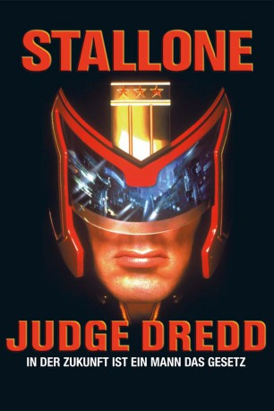

#3445 Judge Dredd
 
 IMDB-Wertung: 5.5 / 10
IMDB-Wertung: 5.5 / 10  Metascore: 0
Metascore: 0 
Man schreibt das dritte Jahrtausend. Nukleare Kriege und ökologische Katastrophen haben die Erde verwüstet. Die Menschen leben in Mega-Städten zusammengepfercht, in denen Anarchie und Chaos herrschen. Die Lösung: Machtvolle Kampfmaschinen wurden kreiert und ausgestattet mit allumfassender Macht: Recht, Gesetz und Justiz in einer Hand – die Judges. In Mega City One lebt der beste unter ihnen – Judge Dredd, das Produkt eines geheimen DNA-Experiments. Sein Bruder Rico will die Herrschaft an sich reißen. Dazu muss er zuerst Dredd aus dem Verkehr ziehen und hängt ihm einen Mord an. Von nun an muss Dredd auf eigene Faust um Recht und Ehre kämpfen. Um seine Unschuld zu beweisen, flieht er aus dem Gefängnis, denn alle Beweise sprechen gegen ihn.
Jahr: 1995
Dauer: 96 Minuten
FSK: 16
Land: USA Studio: Buena Vista InternationalTonspuren: DTS - ,
Untertitel: Deutsch,
Auflösung: 1080p (1920x824) Größe: 8079 MB
Genre: Action, Thriller, Sci-Fi, Krimi
Regisseur:  Danny Cannon
Danny Cannon
Drehbuch: Thomas Bidegain
Soundtrack:
Darsteller:
 Sylvester Stallone als Judge Dredd
Sylvester Stallone als Judge Dredd Armand Assante als Rico
Armand Assante als Rico Rob Schneider als Fergie
Rob Schneider als Fergie Jürgen Prochnow als Judge Griffin
Jürgen Prochnow als Judge Griffin Max von Sydow als Judge Fargo
Max von Sydow als Judge Fargo Diane Lane als Judge Hershey
Diane Lane als Judge Hershey- Joanna Miles als McGruder
 Joan Chen als Ilsa
Joan Chen als Ilsa Balthazar Getty als Olmeyer
Balthazar Getty als Olmeyer Maurice Roëves als Miller
Maurice Roëves als Miller Christopher Adamson als Mean Machine
Christopher Adamson als Mean Machine Ewen Bremner als Junior Angel
Ewen Bremner als Junior Angel Angus MacInnes als Judge Silver
Angus MacInnes als Judge Silver- Louise Delamere als Locker Judge
 Steve Toussaint als Hunter Squad Leader
Steve Toussaint als Hunter Squad Leader- John Blakey als Border Guard
- Dig Wayne als Reggie
 Martin McDougall als Twist
Martin McDougall als Twist- Ashley Artus als Squatter 1
 Stephen Lord als Zed Squatter 1
Stephen Lord als Zed Squatter 1- Phil Kingston als Zed Squatter 2
 Mitchell Ryan als Vartis Hammond
Mitchell Ryan als Vartis Hammond- Frazer Brown als Mega City Thug , uncredited
- Charlie Condou als Cadet , uncredited
- Ryan Gage als Young Thief , uncredited
 Mark Houghton als Supporting , uncredited
Mark Houghton als Supporting , uncredited James Earl Jones als Narrator , uncredited
James Earl Jones als Narrator , uncredited- Mark Moraghan als Judge Monroe , uncredited
 James Remar als Block Warlord , uncredited
James Remar als Block Warlord , uncredited Al Sapienza als Young Judge Who Removes Dredd's Helmet , uncredited
Al Sapienza als Young Judge Who Removes Dredd's Helmet , uncredited Scott Wilson als Pa Angel , uncredited
Scott Wilson als Pa Angel , uncredited- Ian Dury als Geiger
- Peter Marinker als Judge Esposito
- Phil Smeeton als Fink Angel
- Bradley Lavelle als Chief Judge Hunter
- Mark Morghan als Judge Killed by Robot
- Ed Stobart als Barge Crew Member
- Huggy Leaver als Brutal Prisoner
- Lex Daniel als Brisco
- Howard Grace als Pilot
- Christopher Glover als Squatter 2
- Brendan Fleming als Squatter 3
 Ewan Bailey als Aspen Guard
Ewan Bailey als Aspen Guard- Stuart Mullen als Co-Pilot
- Pat Starr als Lily Hammond
- Adam Henderson als Fuppie
- Sam Barriscale als Cadet Marks , uncredited
- Alan Bond als Rioter , uncredited
Datei: X:\1995\Judge Dredd (1995, FSK16, 1920x824).mkv seit 08.04.2016
Festplatte: HD 1992-1995
 Es gibt insgesamt 85 Filme in der Gruppe '1995'
Es gibt insgesamt 85 Filme in der Gruppe '1995'